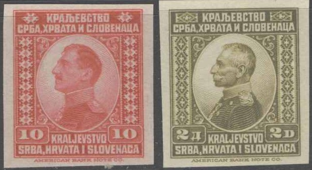
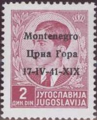
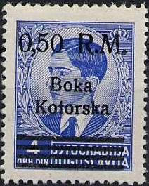
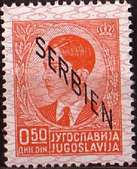
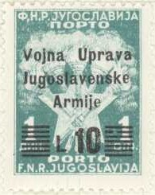

{kind=link}

15 D brown, with '+1.-' surcharge
Return To Catalogue - Yugoslavia, issues before 1921 - Bosnia - Stamps used in Bosnia - Croatia - Montenegro - Serbia
Note: on my website many of the
pictures can not be seen! They are of course present in the
catalogue;
contact me if you want to purchase the catalogue.
2 p brown 5 p green 10 p red 15 p violet 20 p black 25 p blue 50 p green 60 p orange 75 p violet 1 D orange 2 D olive 4 D green 5 D red 10 D brown Surcharged 30 p on 60 p orange (1924)

Imperforate stamps
These stamps have perforation 12. Imperforate stamps exist from remainders which were released without gum (together with perforated remainders) in 1930.
These stamps were issued in slightly different designs ('KRALJEVINA' instead of 'KRALJEVSTVO') in 1923 with the image of King Alexander: 1 D brown, 5 D red, 8 D violet, 20 D green and 30 D orange. Surcharged: 5 D on 8 D violet.
10 + 10 p red 15 + 15 p brown 25 + 25 p blue Surcharged (1922-24) 1 D on 10 + 10 p red 1 D on 15 + 15 p brown 1 D on 25 + 25 p blue 3 D on 15 + 15 p brown 8 D on 15 + 15 p brown 20 D on 15 + 15 p brown 30 D on 15 + 15 p brown
20 p black 50 p brown 1 D red 2 D green 3 D blue 5 D brown 10 D violet 15 D olive 20 D red 30 D green Surcharged (1925) 35 p on 3 D blue 50 p on 3 D blue
15 D brown, with '+1.-' surcharge
25 p green 50 p brown 1 D red 2 D black 3 D blue 4 D orange 5 D violet 8 D grey 10 D olive 15 D brown 20 D violet 30 D orange Surcharged (1926) '+0.25' on 25 p green '+0.50' on 50 p brown '+1.-' on 1 D red '+1.-' on 2 D black '+1.-' on 3 D blue '+1.-' on 4 D orange '+1.-' on 5 D violet '+1.-' on 8 D grey '+1.-' on 10 D olive '+1.-' on 15 D brown '+1.-' on 20 D violet '+1.-' on 30 D orange Overprinted 'XXXX' on surcharged stamps of 1926 (1928) '+1.-' on 1 D red '+1.-' on 2 D black '+1.-' on 3 D blue '+1.-' on 4 D orange '+1.-' on 5 D violet '+1.-' on 8 D grey '+1.-' on 10 D olive '+1.-' on 15 D brown (see image above) '+1.-' on 20 D violet '+1.-' on 30 D orange Overprinted 'JUGOSLAVIA' below (and in cyrillic characters on top, 1933) 25 p green 50 p brown 1 D red 2 D black 3 D blue 4 D orange 5 D violet 8 D grey 10 D olive 15 D brown 20 D violet 30 D orange '=====' on '+0.25' on 25 p green '=====' on '+0.50' on 50 p brown '=====' on '+1.-' on 1 D red
The 1926 surcharged stamps and the 1928 overprints have been forged.
50 p (+ 50 p) grey (church) 1 D (+ 50 p) red (two kings) 3 D (+ 1 D) blue Overprinted 'KRALJEVINA JUGOSLAVIJA' (in latin or cyrillic) 50 p (+ 50 p) grey 1 D (+ 50 p) red 3 D (+ 1 D) blue
50 p (+ 50 p) green 1 D (+ 1 D) red 3 D (+ 1 D) blue
25 p grey 50 p green 75 p green (1932) 1 D red 1.50 D red (1932) 1.75 D red (1934) 3 D blue 3.50 D blue (1934) 4 D orange 5 D violet 10 D olive 15 D brown 20 D violet 30 D lilac With black border (1934, commemoration the death of the King) 25 p grey 50 p green 75 p green 1 D red 1.50 D red 1.75 D red 3 D blue 3.50 D blue 4 D orange 5 D violet 10 D olive 15 D brown 20 D violet 30 D lilac
All values issued in 1931 exist with or without engraver's name at the bottom of the stamp.
With additional label (journalistic congress in Dubrovnik) in either latin or cyrillic letters 50 p + 25 p black 75 p + 25 p green 1.50 D + 50 p red 3 D + 1 D blue 4 D + 1 D green 5 D + 1 D orange
75 p + 50 p green and blue 1 D + 1/2 D red and blue 1 1/2 D + 1/2 D red and green 3 D + 1 D blue and light blue 4 D + 1 D orange and blue 5 D + 1 D violet and blue
75 p + 25 p green 1 1/2 D + 1/2 D red
1.50 D + 0.50 D red 1.75 D + 0.25 D brown
0.75 D + 0.25 D blue 1.50 D + 0.50 D red 1.75 D + 0.25 D brown
50 p lilac 1 D green 2 D red 3 D blue 10 D orange With black border (1935, commemoration the death of the King) 3 D blue
25 p black 50 p orange 75 p green 1 D brown 1.50 D red 1.75 D red 2 D lilac (1936) 3 D yellow 3.50 D blue 4 D green 4 D blue (1936) 10 D violet 15 D brown 20 D blue 30 D lilac
The 10 D value with overprint 'Co.Ci.' was issued in 1941 for Ljubljana. This value (without 'Co.Ci') also exists with a text 'R.Commisariato Civila Territori Sloveni occupati LUBIANA' issued for Ljubiana.
75 p green 1.50 D red 1.75 D brown 3.50 D blue 7.50 D red
1.50 D + 1 D brown 3.50 D + 1.50 D blue
0.75 D + 0.25 D green 1.50 D + 0.50 D red 1.75 D + 0.75 D brown 3.50 D + 1 D blue
75 p brown 1.75 D blue
0.75 D + 0.50 D green 1.50 D + 0.50 D lilac
0.25 + 0.25 D brown 0.75 D + 0.75 D green Different design 1.50 D + 1 D orange 2 D + 1 D red
3 D green 4 D blue
3 D green (inscription in cyrillic) 4 D blue (inscription 'JUGOSLAVIJA')
Not to be confused with the 'Entente Balkanique' 1940 issue.
0.25 D brown 0.50 D orange 1 D green 1.50 D red 2 D lilac 3 D light brown 4 D blue 5 D dark blue 5.50 D brown 6 D grey 8 D brown 12 D violet 16 D brown 20 D blue 30 D lilac
Examples of overprints





Stamps of Yugoslavia overprinted for use in Croatia
in 1941

Stamp of Yugoslavia, overprinted 'SERBIEN' to be used in Serbia
These stamps with overprint 'Co.Ci.'
were issued in 1941 for Ljubiana: 0.25 D, 0.50 D, 1 D, 3 D, 4 D,
5 D, 5.50 D, 6 D, 8 D, 12 D and 16 D.
Some values (without 'Co.Ci') also exist with a text
'R.Commisariato Civila Territori Sloveni occupati LUBIANA' issued
for Ljubljana: 1.50 D, 4 D, 8 D, 12 D and 16 D.
Stamps with overprint 'ZONA OCCUPATA FIUMANO KUPA' were issued
for Fiumano-Kupa.
Inscription 'JUGOSLAVIJA' 3 D blue 4 D grey Inscription Jugoslavija in cyrillic text 3 D blue 4 D grey
2 D blue 3 D grey 5 D red 10 D black
These stamps also exist with overprint.
10 K on 0.25 K red (Olzalj) 10 K on 0.50 K blue (red overprint) 10 K on 0.75 K green (Varazdjin, red overprint) 10 K on 1 K grey (red overprint) 20 K on 2 K red (Zagreb) 20 K on 3 K red 20 K on 3.50 K red 20 K on 4 K blue (Drina, red overprint) 20 K on 5 K blue (Zemun, red overprint) 20 K on 6 K olive (Dubrovnik, red overprint) 30 K on 7 K orange (Slavonia, green overprint) 30 K on 8 K brown (green overprint) 30 K on 10 K lilac (green overprint) 30 K on 12.50 K black (red overprint) 40 K on 20 K brown (red overprint) 40 K on 30 K brown (red overprint) 50 K on 50 K black (red overprint)
Another set of overprints exist with 'JUGOSLAVIJA' and star (Zagreb issue) 20 K on 5 K blue (red overprint) 40 K on 1 K grey (red overprint) 60 K on 3.50 K red (red overprint) 80 K on 2 K red 160 K on 0.50 K blue (red overprint) 200 K on 12.50 K black (red overprint) 400 K on 0.25 K red
'10' on 5 p green (overprint and surcharge in red) '30' on 5 p green
10 p red 30 p green 50 p violet 1 D brown 2 D blue 5 D orange 10 D brown 25 D red 50 D green
Two types exist of these stamps, differing in either the thickness of the border inscriptions or the value.
Surcharged (1928) '10' on 25 D red '10' on 50 D green With new country name overprinted
With inverted overprint; I have also seen the 5 D with inverted
overprint
50 p violet (green overprint) 1 D brown (blue overprint) 2 D blue (red overprint) 5 D orange (blue overprint) 10 D brown (blue overprint)
50 p violet 1 D red 2 D blue 5 D orange 10 D brown
Two types exist: with and without engraver's name at the bottom.
These stamps with overprint 'Co.Ci.' were issued in 1941 for Ljubiana: 2 D blue and 10 D brown.
10 D red 20 D blue
Value in black 2 D brown and black 3 D violet and black 5 D green and black 7 D light brown and black 10 D lilac and black 20 D blue and black 30 D light blue and black 40 D red and black Value in color of the stamp 1 D blue 1.50 D blue 2 D red 3 D brown 4 D violet Overprinted 'FNR JUGOSLAVIJA' (in latin and cyrillic, 1950) 1.50 D blue 3 D brown 4 D violet
0.50 D orange 1 D orange 1 D brown 2 D blue 2 D green 3 D green 5 D violet 5 D blue 7 D red 10 D lilac 10 D red 20 D brown 20 D violet 30 D orange 50 D blue 100 D brown

50 p blue and red 50 p green and red (postage due stamp)
0.50 D brown and red

Inscription 'ZRACNA POSTA 15.11.1928' with image of an aeroplane
in the center, King in the left upper part and arms in the right
lower part.

With text around the central circle (issued for Slovenia)
2 brown and blue (blue border)
10 brown and blue
20 brown and blue
50 brown and blue
1 K brown and dark brown ("KRONA")
2 K brown and dark brown ("KRONI")
3 K brown and dark brown
5 K brown and dark brown
10 K brown and dark brown
Without text around the central circle (for the whole of Yugoslavia)
2 brown and blue
10 brown and blue
20 brown and blue
50 brown and blue
1 K brown and dark brown
2 K brown and dark brown
3 K brown and dark brown
5 K brown and dark brown
10 K brown and dark brown

Similar fiscal stamp for Austria

Later issue.
{kind=link}